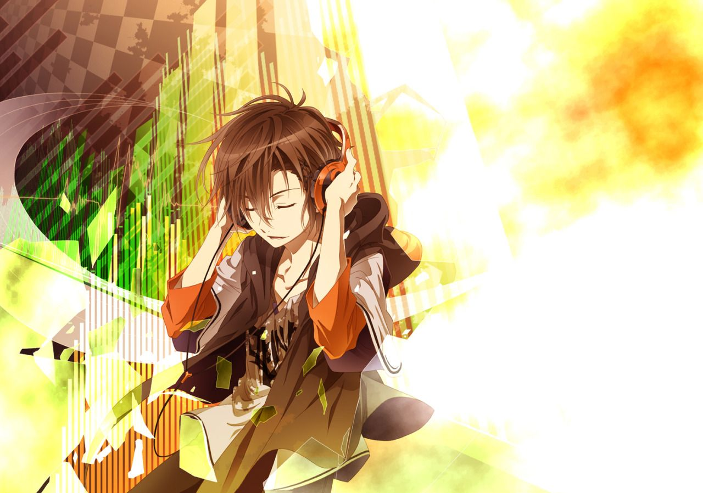

Yoshino und Mahiro, zwei Freunde fürs Leben. Doch eines Tages verschwindet Mahiro und Yoshino kann ihn einfach nirgends finden. Als Yoshino eines Tages dann Blumen auf das Grab von Mahiros Familie legt, taucht plötzlich eine geheimnisvolle Frau auf. Sie beginnt Yoshino über Mahiro auszufragen und macht den Anschein etwas über dessen Verschwinden zu wissen.Yoshino beginnt auch ihr Fragen zu stellen und was er erfährt, kann er kaum glauben.
Shigatsu wa Kimi no Uso
Kousei Arimas Welt bricht nach dem Tod seiner Mutter zusammen.Einst war ein begnadeter Klavierspieler, doch seit dem traumatischen Ereignis nimmt der die Töne seines Klaviers nicht mehr wahr. Als er das Mädchen Kaori Miyazono trifft, welches eine hochtalentierte Violinistin ist, gerät er jedoch in einen emotionalen Strudel, der ihn aus seiner dunklen und stillen Welt reißt…
K-Project
Yashiro Isana (Shiro) wird urplötzlich in die Auseinandersetzung vermeintlich verfeindeter Gruppen hineingezogen, dabei ist er eigentlich nur ein normaler Schüler in der Vorbereitung auf das Schulfests der Ashinaka High School. In der Welt herrschen sieben Königreiche, deren Herrschafts- und Territorialansprüche fortwährend in „Kriegen“ verteidigt werdenWelche Rolle spielt Shiro bei alldem?